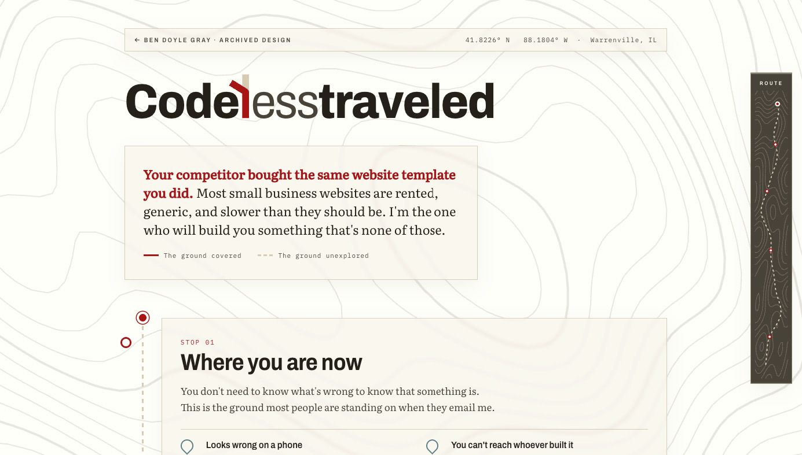
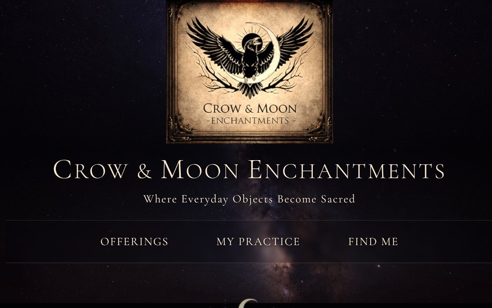
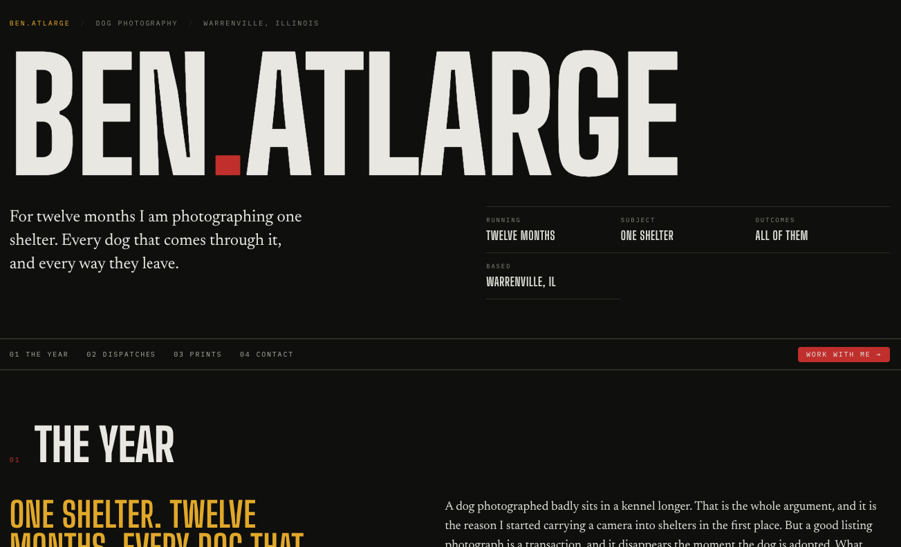

The site for my former web consultancy. The business is closed. The
design earned a place here anyway, so it is
preserved, working, as it was built.

Homepage · desktop
The design
Swiss typographic layout on a hairline grid. Type carries the
page; the grid is visible on purpose, as a rule the layout keeps
rather than a scaffold it hides.
The build
The custom logo mark is positioned against live font metrics,
measured at runtime with Canvas TextMetrics. Whichever way the
browser resolves the typeface, the mark sits where it was drawn
to sit against the wordmark.
A site for a handmade-goods business, written to sound like the
person behind the counter.

Homepage · desktop
The design
Product copy written in the owner's voice. A shop like this
sells on who made the thing, so the site needed to read like
her, not like a catalogue.
The build
An Eleventy 3 static build with a modular SCSS architecture on
the Sass @use module system. Static, fast, and
cheap to host for as long as the shop wants it.
The portfolio for my pet photography. The photographs are the point,
so the interface stays out of their way.

Gallery · desktop
The design
A master and detail gallery: one photograph large, the rest in
reach. Quiet chrome, so every frame is judged on the frame.
The build
Built from real button elements rather than click
handlers on divs, so the keyboard works without special effort.
With JavaScript off, it degrades to a plain stacked gallery.
Accessibility as a structural decision.
This site. A contact sheet from a roll of film, with a
grease-pencil mark on each frame drawn in SVG and revealed by a
dash animation measured from the path at runtime. No build step,
no dependencies.
A Discourse community for neurodivergent professionals, with a
custom theme. I also host it: a VPS I manage, Docker and Nginx,
automated backups and monitoring.
Start something
If you have an interface that needs both the drawing and the
building, tell me what it is and where it is stuck.